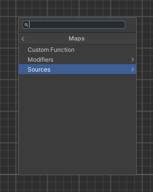
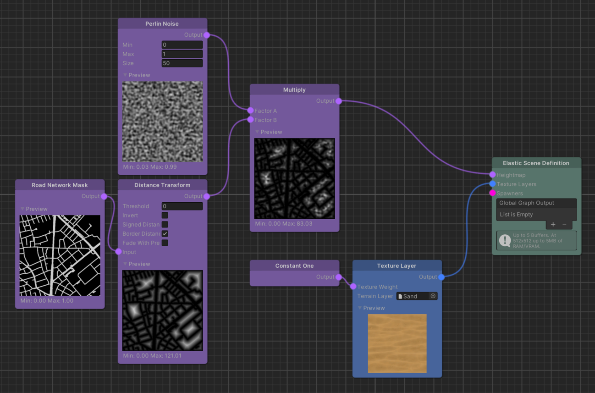

Map Nodes
With elastic content creation comes the need to introduce real world data to the virtual world. For this matter we provide a Map node type that renders certain real world data into a 2D greyscale texture-like data structure. The road a player is traveling on in the real world is a good example. As we do not want the player to collide with anything from the game world, we have to carefully arrange the experience content around the roads. Doing this in a dynamic, or rather elastic manner, for your environment is the ultimate goal you are looking for when assembling your graph.
So as an example, to get data about the road around the player into an Elastic Graph, you can conveniently use the Road Network Mask node. This node fetches road data from a map service provider and presents it as a 2D texture that can be utilized in the graph system.

It is important to understand that each pixel (or texel) of the generated 2D map represents a value that correlates to the real world area of the road. For the Road Network Mask these values are either 1 where there is road or 0 where there is none.
Sources & Modifiers
Map nodes are divided into Sources and Modifiers. While Sources generate an initial set of data, Modifiers are used to alter such data sets of the same type.

An example on how to apply Modifiers on Sources can be seen below. We use two Sources, a Road Network Mask and a Perlin Noise node. The first Modifier we apply to the Road Network Mask is the Distance Transform, which in this use case computes the distance away from the road mask per pixel. We then multiply this result with the Perlin Noise output using the Multiply Modifier. So effectively we multiply each pixel from one map with the correlating pixel on the second map. Finally this produces a very hilly/noisy surface where there is no road and a flat surface for the road itself:


Tip
Each Map node renders a preview texture in the graph editor to get a general idea how map data is modified throughout the system.
Note
The resolution of the Map textures is determined by the ElasticSceneGenerator's Map Resolution setting. However, it is recommended to keep this value at its default for performance reasons.